VLM Council Progressive Narrowing + Parallel Hypotheses Evaluation Report
1. Ground-truth statistics
Geographic bias
- North/south: strong north bias (p=0.0067)
- East/west: no significant bias (p=0.8476)
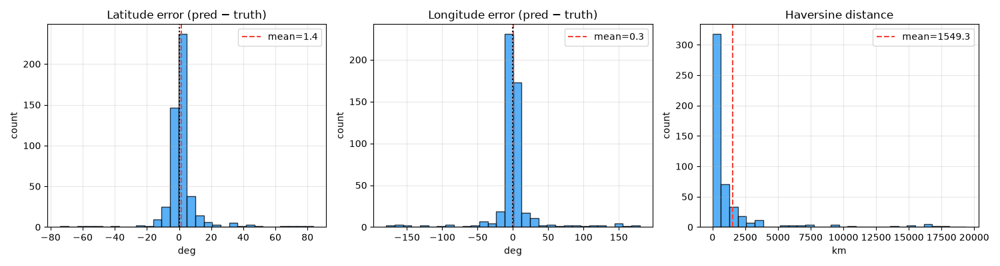
Fig 1: Lat / lng / haversine error distributions.
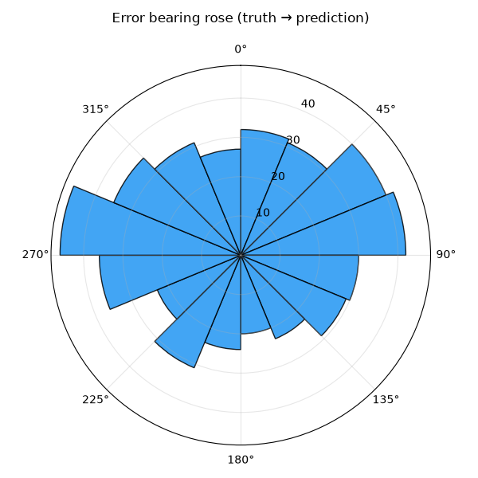
Fig 2: Direction of prediction errors.
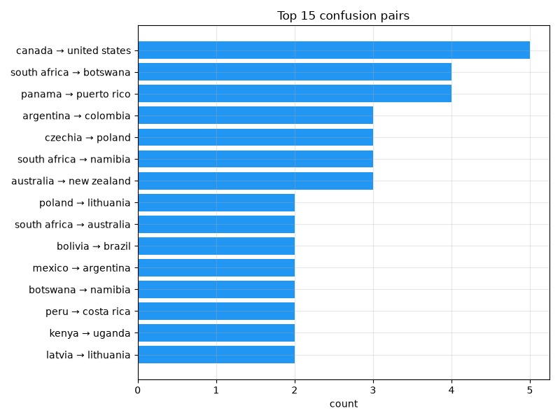
Fig 3: Top confusion pairs (truth to predicted).
Top confusion pairs (20)
| Truth | Predicted | Count |
|---|---|---|
| canada | united states | 5 |
| south africa | botswana | 4 |
| panama | puerto rico | 4 |
| argentina | colombia | 3 |
| czechia | poland | 3 |
| south africa | namibia | 3 |
| australia | new zealand | 3 |
| poland | lithuania | 2 |
| south africa | australia | 2 |
| bolivia | brazil | 2 |
| mexico | argentina | 2 |
| botswana | namibia | 2 |
| peru | costa rica | 2 |
| kenya | uganda | 2 |
| latvia | lithuania | 2 |
| indonesia | thailand | 2 |
| turkey | greece | 2 |
| russia | ukraine | 2 |
| france | united states | 2 |
| chile | peru | 2 |
Asymmetric confusion pairs (A to B is not B to A)
| Country A | Country B | A predicted as B | B predicted as A | Asymmetry |
|---|---|---|---|---|
| south africa | botswana | 4 | 0 | +4 |
| panama | puerto rico | 4 | 0 | +4 |
| canada | united states | 5 | 1 | +4 |
| argentina | colombia | 3 | 0 | +3 |
| czechia | poland | 3 | 0 | +3 |
| south africa | namibia | 3 | 0 | +3 |
| australia | new zealand | 3 | 0 | +3 |
| poland | lithuania | 2 | 0 | +2 |
| south africa | australia | 2 | 0 | +2 |
| bolivia | brazil | 2 | 0 | +2 |
| mexico | argentina | 2 | 0 | +2 |
| botswana | namibia | 2 | 0 | +2 |
| peru | costa rica | 2 | 0 | +2 |
| kenya | uganda | 2 | 0 | +2 |
| latvia | lithuania | 2 | 0 | +2 |
Per-agent accuracy (initial round)
| Agent | n | Top-1 | Top-3 | Coverage |
|---|---|---|---|---|
| linguistic | 107 | 78.5% | 86.0% | 91.6% |
| landscape | 500 | 63.4% | 79.6% | 81.4% |
| botanics | 499 | 63.1% | 78.4% | 79.4% |
| regulatory | 443 | 64.6% | 77.4% | 78.3% |
| meta | 499 | 62.5% | 74.5% | 74.5% |
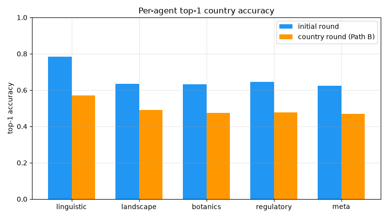
Fig 4: Per-agent top-1 accuracy (initial vs. Path B country round).
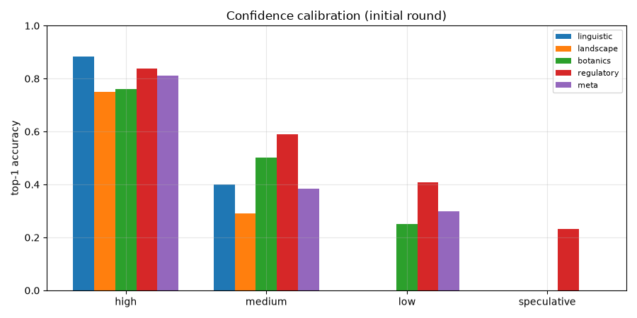
Fig 5: Confidence calibration by agent.
Country round (Path B only)
| Agent | n | Top-1 | Top-3 | Coverage |
|---|---|---|---|---|
| linguistic | 35 | 57.1% | 71.4% | 74.3% |
| landscape | 185 | 49.2% | 61.6% | 62.2% |
| botanics | 185 | 47.6% | 60.0% | 60.5% |
| regulatory | 184 | 47.8% | 60.3% | 61.4% |
| meta | 185 | 47.0% | 55.1% | 55.1% |
Geographic world maps
Per-country accuracy across 91 countries with truth. Macro-averaged TPR: 55.0%.
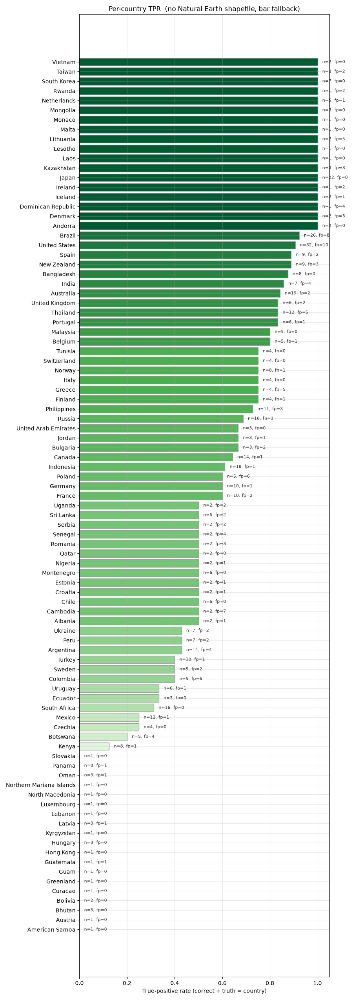
Per-country true-positive rate (green) with false-positive outlines (red).
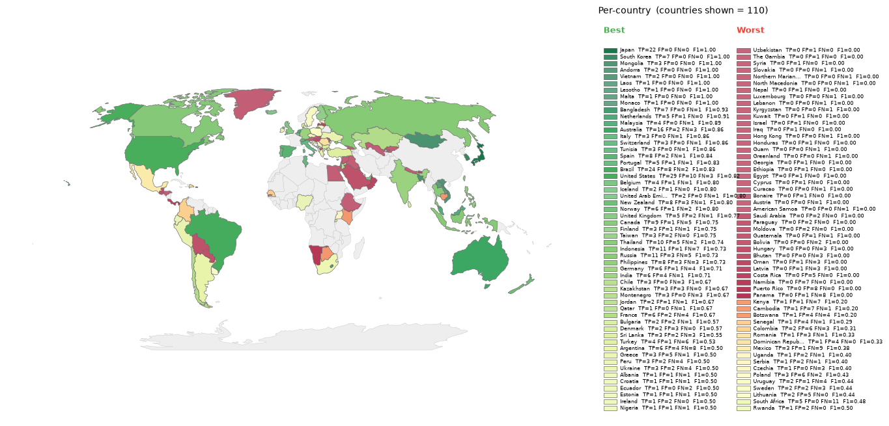
Per-country F1, divergent around the run's macro-F1. Green = above average, red = below.
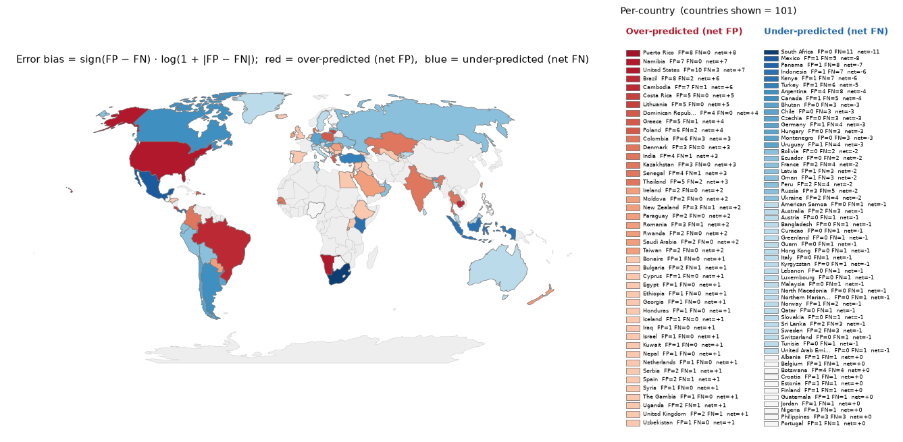
Per-country error bias (FP-FN)/(FP+FN). Red = over-predicted, blue = missed.
2. Approach dynamics
Progressive Narrowing routes each image down Path A (region consensus, jump straight to the judge) or Path B (parallel hypotheses plus a country re-assessment inside the confirmed region). This section traces where the truth country survives or is lost.
Path A / Path B split
Region narrowing funnel
Does the confirmed region actually contain the ground-truth country?
| Split | Region matches GT | n |
|---|---|---|
| All | 86.7% | 498 |
| Path A | 95.2% | 315 |
| Path B | 72.1% | 183 |
Country narrowing funnel (Path B initial to re-assessment)
Per-agent initial pick vs country re-assessment pick (745 Path B agent images).
| Category | Count | Share |
|---|---|---|
| Constructive (initial wrong, re-assessment moved onto GT) | 35 | 4.7% |
| Destructive (initial correct, re-assessment moved off GT) | 43 | 5.8% |
| Stayed correct (both on GT) | 329 | 44.2% |
| Stayed wrong (both wrong, same country) | 225 | 30.2% |
| Lateral (both wrong, different countries) | 113 | 15.2% |
Pipeline funnel
Where does the truth country get lost in the Progressive Narrowing pipeline?
| Stage | Description | Cumul. survival | Conditional |
|---|---|---|---|
| S0 | Truth in any agent's initial top-K | 86.6% | 86.6% |
| S1 | Confirmed/proposed region matches truth's region | 85.2% | 98.4% |
| S2 | Truth in country-round top-K (Path B) / region OK (Path A) | 80.6% | 94.6% |
| S3 | Truth in country hypothesis pool | 80.0% | 99.3% |
| S4 | Final prediction matches truth | 64.0% | 80.0% |
Bottleneck: S4, Final prediction matches truth
Conditional rate: 80.0% (95% CI [75.8%, 83.6%])
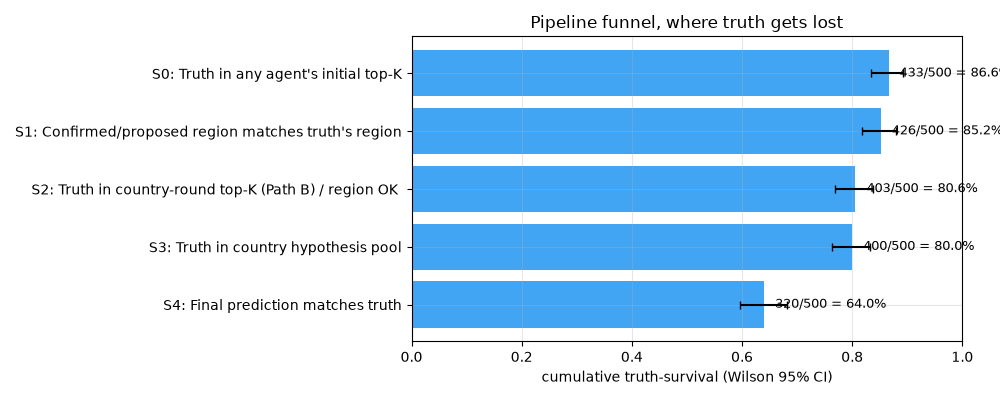
Cumulative truth-survival through the PN pipeline (Wilson 95% CI).
Oracle ceilings
Counterfactual accuracy if a given stage were perfect.
| Scenario | Accuracy | n |
|---|---|---|
| Actual | 64.0% | 500 |
| Majority-vote baseline (initial round) | 63.6% | 500 |
| Oracle region (perfect region step) | 88.0% | 500 |
| Oracle pool (truth always in hypothesis pool) | 88.2% | 500 |
| Oracle decision (perfect final judge) | 82.2% | 500 |
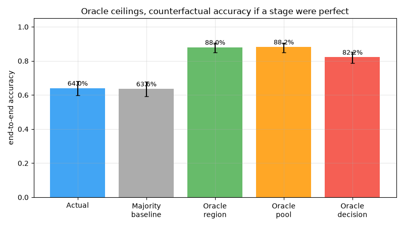
Oracle ceiling bars: the gap between actual and each ceiling is the recoverable headroom.
Agreement vs. accuracy
Final accuracy split by how many of the 5 agents agreed on the same top-1 country in the initial round.
| Agents agree | n | Accuracy | CI low | CI high |
|---|---|---|---|---|
| 5/5 | 90 | 88.9% | 80.7% | 93.9% |
| 4/5 | 238 | 76.1% | 70.2% | 81.0% |
| 3/5 | 103 | 42.7% | 33.6% | 52.4% |
| 2/5 | 64 | 21.9% | 13.5% | 33.4% |
| 1/5 | 5 | 20.0% | 3.6% | 62.4% |
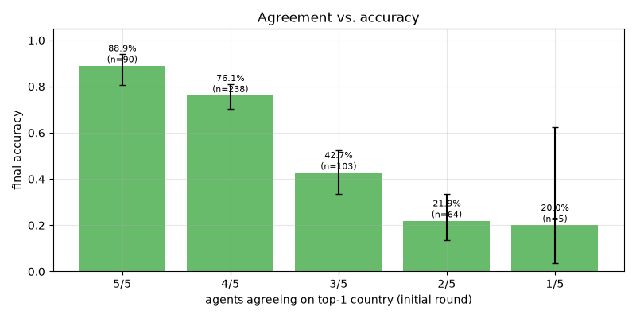
Higher initial agreement correlates strongly with final accuracy.
Path A vs. Path B
| Metric | Path A (consensus) | Path B (no consensus) |
|---|---|---|
| n | 315 | 185 |
| Accuracy | 73.0% | 48.6% |
| Median haversine | 323 km | 936 km |
| Truth in hypothesis pool | 91.4% | 66.5% |
Error severity
Near-miss examples (41)
| Image | Truth | Predicted | Distance |
|---|---|---|---|
| 1NJsXTxIF9GGMDxC_1 | kyrgyzstan | uzbekistan | 212 km |
| 1NJsXTxIF9GGMDxC_5 | south africa | botswana | 479 km |
| 4UvmdTHySo6AXW4M_3 | poland | lithuania | 291 km |
| 5bPlIRT7eGN79a2E_5 | chile | argentina | 434 km |
| 67gLC5CcGgkQIWEW_1 | ukraine | moldova | 436 km |
| 8Uo6ejwXYqmp9av3_2 | norway | denmark | 421 km |
| AVKTblAzBqaYrcKe_2 | senegal | the gambia | 143 km |
| DKGAIVKGYnLWmMy9_3 | czechia | poland | 469 km |
| DKGAIVKGYnLWmMy9_4 | canada | united states | 441 km |
| DKGAIVKGYnLWmMy9_5 | serbia | romania | 409 km |
| HLDekf7z49ovS9Y8_2 | bhutan | india | 248 km |
| JnTw9kl2nWPFaoUg_2 | france | belgium | 77 km |
| KTKKKeKESyntpGnS_1 | austria | germany | 491 km |
| KZ2f6LqzJRyChcg8_2 | latvia | lithuania | 268 km |
| Lz6IDBZmUTr5oPdV_1 | hungary | poland | 484 km |
Wrong-region examples (58)
| Image | Truth | Predicted | Distance |
|---|---|---|---|
| 4UvmdTHySo6AXW4M_4 | united states | namibia | 14583 km |
| 4UvmdTHySo6AXW4M_5 | cambodia | india | 3255 km |
| 56Q4T4rpv9O9sCpP_2 | south africa | australia | 10484 km |
| 5bPlIRT7eGN79a2E_3 | mexico | argentina | 9156 km |
| 74bPHM081cMUaNKT_4 | kenya | honduras | 13417 km |
| 74bPHM081cMUaNKT_5 | turkey | albania | 1061 km |
| 9oZfZYQEl9GWjZPu_3 | south africa | australia | 10368 km |
| 9oZfZYQEl9GWjZPu_4 | peru | costa rica | 1772 km |
| EEI3fwu4iZvPT2zP_2 | peru | panama | 1850 km |
| EEI3fwu4iZvPT2zP_3 | sri lanka | brazil | 13758 km |
| HF1MKwIFNCNb4FdM_5 | sri lanka | indonesia | 3855 km |
| IozkbMt8zbdH9XCv_3 | argentina | iraq | 13911 km |
| IozkbMt8zbdH9XCv_5 | nigeria | india | 7826 km |
| JfPkjboMSjCsG1Qu_4 | colombia | dominican republic | 947 km |
| KTKKKeKESyntpGnS_5 | brazil | mexico | 7032 km |
3. LLM-as-judge verdicts
Verdicts: 500 / 500 · Constructive synthesis: 69.4%
Progressive Narrowing scores
Region narrowing quality: for Path A (consensus) this scores the consensus check; for Path B it scores the region-decision reasoning quality. Hypothesis pool quality scores whether the generated country hypotheses were the right set of plausible candidates, regardless of whether the truth country was in the pool.
| Split | n | Mean | Median | Stdev |
|---|---|---|---|---|
| Region narrowing, all | 500 | 0.709 | 0.750 | 0.312 |
| Region narrowing, Path A | 0 | n/a | n/a | n/a |
| Region narrowing, Path B | 0 | n/a | n/a | n/a |
| Hypothesis pool, all | 500 | 0.435 | 0.500 | 0.279 |
| Hypothesis pool, truth in pool | 0 | n/a | n/a | n/a |
| Hypothesis pool, truth NOT in pool | 500 | 0.435 | 0.500 | 0.279 |
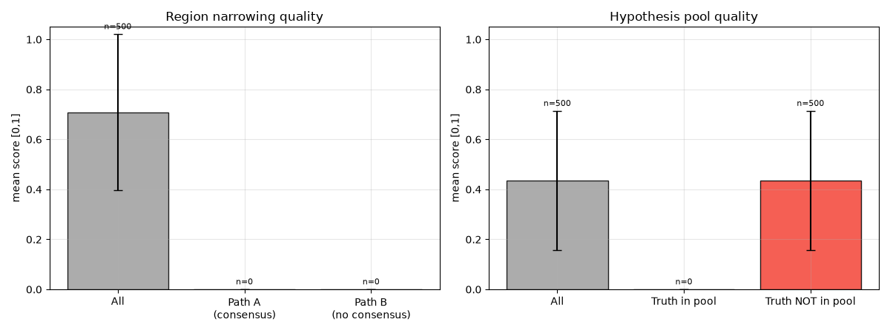
Fig 6: Region narrowing quality (Path A vs B) and hypothesis pool quality.
Per-agent judge scores
| Agent | n | Role adh. | Halluc. (down) | Visual cons. (up) | Conf. calib. (up) |
|---|---|---|---|---|---|
| linguistic | 500 | 100.0% | 0.00 ± 0.00 | 0.89 ± 0.32 | 0.49 ± 0.28 |
| landscape | 500 | 100.0% | 0.02 ± 0.06 | 0.93 ± 0.07 | 0.56 ± 0.34 |
| botanics | 500 | 100.0% | 0.03 ± 0.10 | 0.90 ± 0.10 | 0.54 ± 0.32 |
| regulatory | 500 | 100.0% | 0.01 ± 0.03 | 0.94 ± 0.07 | 0.55 ± 0.30 |
| meta | 500 | 100.0% | 0.02 ± 0.08 | 0.90 ± 0.10 | 0.55 ± 0.34 |
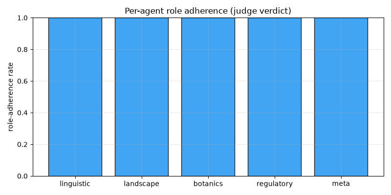
Fig 7: Per-agent role adherence rate.
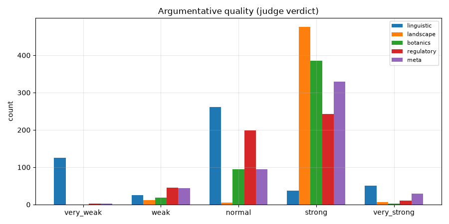
Fig 8: Argumentative quality histogram.
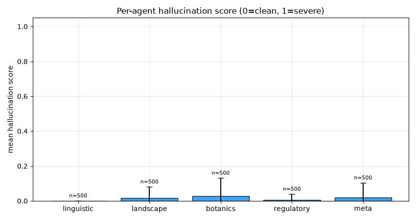
Fig 9: Per-agent hallucination score (0 = clean, 1 = severe).
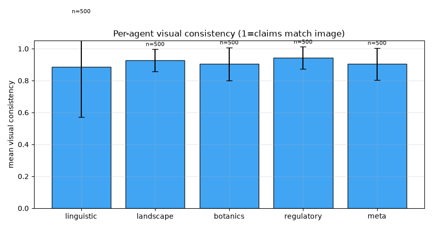
Fig 10: Per-agent visual consistency.
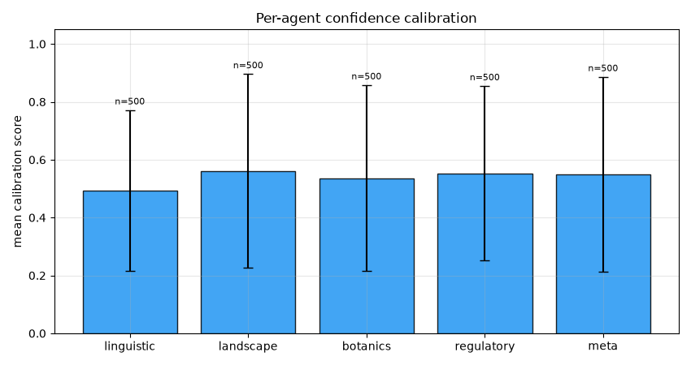
Fig 11: Per-agent confidence calibration.
Hallucination examples
landscape: 5 flagged claim(s)
| Image | Score | Hallucinated claim |
|---|---|---|
| 1NJsXTxIF9GGMDxC_1 | 0.75 | claimed 'semi-arid vegetation... typical of the South Caucasus' |
| 1NJsXTxIF9GGMDxC_1 | 0.75 | claimed 'specific style of road infrastructure... characteristic of rural Azerbaijan' |
| 9lNwy1vjD53PTSwt_1 | 0.10 | claimed 'dark, fertile chernozem' is visible (soil is not visible under grass) |
| JfPkjboMSjCsG1Qu_4 | 0.20 | claimed 'calcareous/light-colored soil visible' — soil is not clearly visible under vegetation |
| NqhvwHTYOTtGmZgm_1 | 0.50 | claimed 'volcanic basaltic soil' — the ground is clearly grey gravel/sand, not black basalt. |
botanics: 5 flagged claim(s)
| Image | Score | Hallucinated claim |
|---|---|---|
| 1NJsXTxIF9GGMDxC_1 | 0.75 | claimed 'South Caucasus regional flora' |
| 1NJsXTxIF9GGMDxC_1 | 0.75 | claimed 'vegetation is typical of the lowland plains... of Azerbaijan' |
| 3uP6lYo9pzx5Q0km_5 | 0.30 | Identified Castanea sativa (Sweet Chestnut) — while plausible, the image resolution is insufficient to confirm this specific species. |
| 6ypQOh9cOoE7WaWH_3 | 0.20 | claimed 'eucalyptus plantations' are visible in the background hills |
| 74bPHM081cMUaNKT_2 | 0.20 | claimed 'Arctic-alpine tundra' — image shows arid scrubland, not tundra. |
regulatory: 5 flagged claim(s)
| Image | Score | Hallucinated claim |
|---|---|---|
| 1NJsXTxIF9GGMDxC_1 | 0.50 | claimed 'green fuel price totem displays A3C' |
| 9lNwy1vjD53PTSwt_5 | 0.20 | claimed 'left-hand driving' based on vehicle position, which is ambiguous in a POV shot. |
| JfPkjboMSjCsG1Qu_5 | 0.20 | claimed 'specific symbol' on the blue sign — the sign is a generic bus stop symbol, not a specific regional marker. |
| Y2QhKx7sks9MExvw_5 | 0.10 | claimed 'right-hand traffic' — vehicle is driving away, no clear lane position |
| ZMSyLdPt9G7MhcHC_4 | 0.20 | claimed red/green curbs are a 'common regulatory marking in Guatemala' |
meta: 5 flagged claim(s)
| Image | Score | Hallucinated claim |
|---|---|---|
| 1NJsXTxIF9GGMDxC_1 | 0.50 | claimed 'green fuel price totem is characteristic of SOCAR stations in Azerbaijan' |
| 3uP6lYo9pzx5Q0km_4 | 0.80 | Claimed 'Google Trekker camera blur' is visible at the bottom of the image. |
| 3uP6lYo9pzx5Q0km_4 | 0.80 | Claimed 'Trekker camera' is common in Costa Rican forest paths. |
| 56Q4T4rpv9O9sCpP_5 | 0.75 | claimed 'distinct Google Street View halo... characteristic of the camera rig used in Botswana' |
| 56Q4T4rpv9O9sCpP_5 | 0.75 | claimed 'simple wooden poles... differs from the more reinforced concrete poles often seen in neighboring South Africa' |